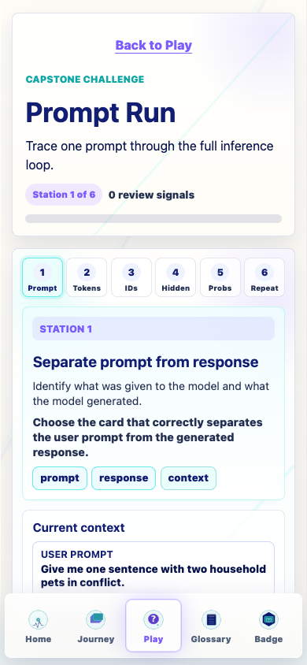
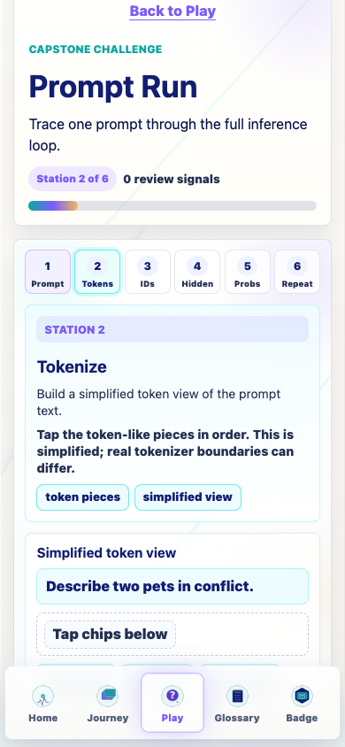
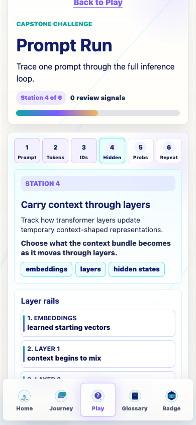
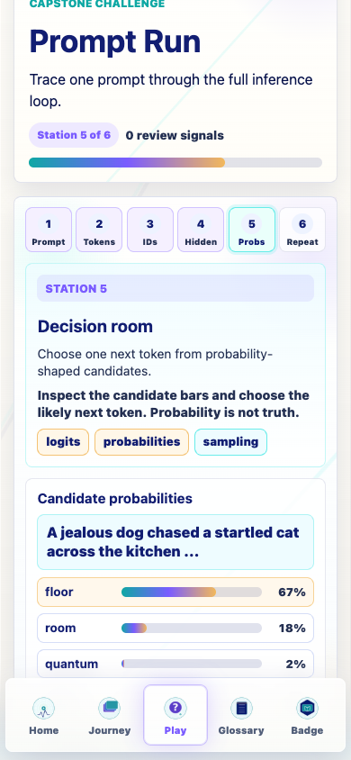
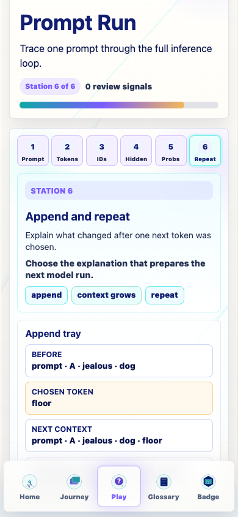
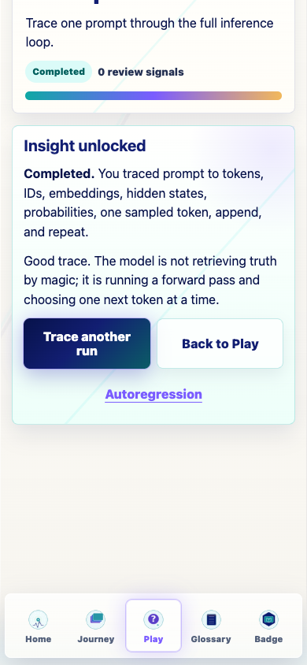
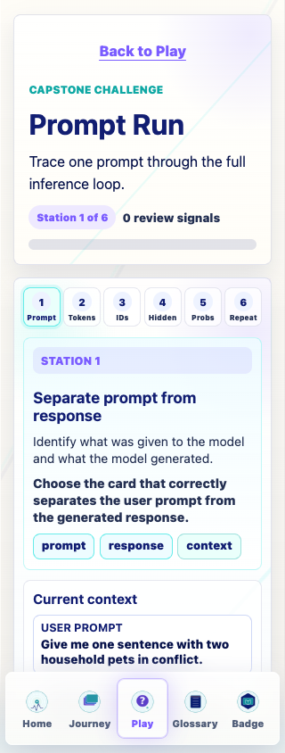
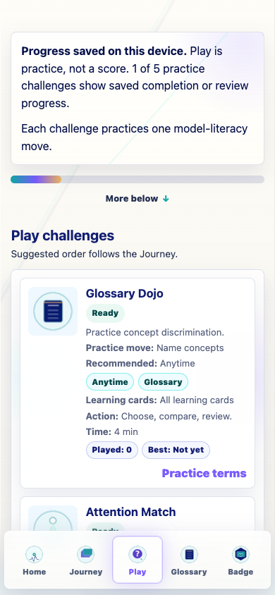

Prompt Life v0.27.2
Prompt Run v2 Capstone Redesign
Prompt Run is now a compact shared Play challenge that asks learners to actively trace one prompt through the inference loop.
Summary
- Replaced the legacy passive 12-step Prompt Run route with a six-station capstone challenge.
- Stations trace: prompt/response, tokenization, token IDs, hidden states, probabilities, append/repeat.
- Progress writes to
promptlife.playChallenges.v1and preserves/bridges old Prompt Run keys. - Completion and review-suggested states use calm feedback without scores, streaks, timers, or leaderboards.
- Version bumped to
0.27.2.
Six Stations
- Separate prompt from response: prompt is given; response tokens are generated.
- Tokenize: text becomes a simplified token view.
- Map to numbers: token IDs are lookup numbers, not meanings by themselves.
- Carry context through layers: embeddings become temporary context-shaped hidden states.
- Decision room: logits/probabilities shape one next-token choice; probability is not truth.
- Append and repeat: one token is appended, context grows, and the next run conditions on it.
Storage
- Created/read/written:
promptlife.playChallenges.v1. - Read/written/preserved:
promptlife:v1:promptRunProgress. - Read/written/preserved:
promptlife:v1:traceComplete. - Read/preserved for compatibility:
pl.promptRunProgressandpl.traceComplete. - Reset QA: shared Play progress is removed; legacy Prompt Run progress is rewritten as an empty progress object; trace completion resets to
false.
Verification
npm run typecheck: passed.npm run build: passed with the existing Vite large-chunk warning.npm run build:pages: passed with the existing Vite large-chunk warning.npm run audit:answers: passed.- 390px QA: happy completion, review-suggested completion, Play landing, Badge, reset, and smoke routes passed.
- 320px QA: Prompt Run opened with no horizontal overflow.
Known Issues
- The capstone uses simplified toy values and token boundaries; it is a learning trace, not a real tokenizer or transformer debugger.
- The existing production bundle-size warning remains.
Screenshots







